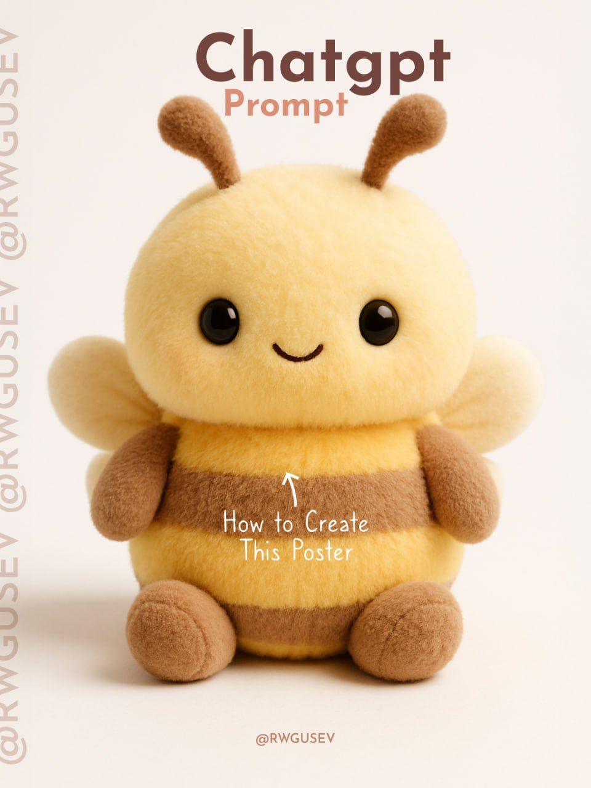
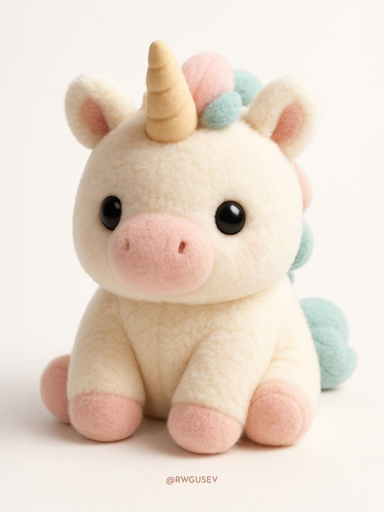

ברוכים הבאים לפינת הפרומפט של שישי: בכל שישי אני משתף פרומפט חמוד שאפשר ליישם עבור עצמכם עם שינויים קלים בתוכן. והיום:
פורסם במקור ב LinkedIn
ברוכים הבאים לפינת הפרומפט של שישי: בכל שישי אני משתף פרומפט חמוד שאפשר ליישם עבור עצמכם עם שינויים קלים בתוכן. והיום:
צעצוע של אימוג'י.
דמיינו 🐇, 🐢, או אפילו 💀 הופכים לבובה רכה, שמנמנה ומתוקה להפליא, כזו שנראית כאילו יצאה זה עתה ממדף צעצועים יוקרתי ומצולמת לקטלוג.
הפרומט של השבוע הופך כל אימוג'י לבובת פרווה תלת־ממדית ריאליסטית אך מהפנטת ברכותה. העיצוב מדגיש מרקם של פרווה חלקה, תאורה שמלטפת את הקימורים, וצבעים רכים שמעניקים תחושת חלום מתוק.
אתם בוחרים את הדמות – 🦄, 🌸, 🐘, 🧠 – והבינה המלאכותית הופכת אותה לבובת חיבוק דיגיטלית, על רקע לבן ונקי, בגרסה שאפשר כמעט למשש דרך המסך.
יש משהו משחרר בלהפוך סמל גרפי קטן לאובייקט רך, גשמי, כמעט תינוקי. תרגול בעיצוב, אבל גם בהמרת רעיונות מופשטים לחפצים מדויקים ומקסימים.
רוצים לנסות?
הדביקו את הפרומט, שנו את [emoji] למה שאתם אוהבים – ותנו לדמיון לעבוד:
Create a hyper-realistic 3D render of a [emoji] as an ultra-cute, soft plush toy, designed to look like a huggable children’s stuffed animal. The toy should have a round, chubby shape with fluffy, smooth fur, radiating warmth and innocence. Use soft, even lighting to highlight its cozy texture, and place it on a pure white background for a clean, modern look. Keep the colors sweet and playful, with a slightly muted palette for a gentle, dreamy feel. The style should be hyper-detailed yet soft, focusing on maximum cuteness and a toy-like aesthetic.
--
התוכן הועתק ותורגם עבורכם מ: https://lnkd.in/dWacid9f
תהנו!

